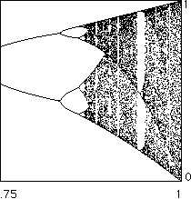
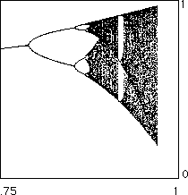

|  |  |
| The bifurcation diagram for |
The bifurcation diagram for |
The similarity to the logistic bifurcation diagram is striking. Not only do these bifurcation diagrams appear similar, they share some quantitative properties. For instance,
| magnification will reveal the periodic windows occur in the same order, and |
| the limits of the ratios of lengths of the period-doubling bifurcations are the same. |
Feigenbaum argued the sequence of higher iterates of the function converges in some sense to a universal function g(x).
Using ideas from renormalization theory, he derived an equation
-alpha*g(g(x/alpha)) = g(x)
that this universal function must satisfy.
Here alpha is the Feigenbaum alpha constant, the ratio of the distance between the middle branches of the bifurcation diagram when the period-doublings occur.
To attempt to solve this equation, Feigenbaum took polynomial approximations of the universal function and used Newton's method to estimate the coefficients.
Several years later, Oscar Lanford produced a careful proof of the existence of the universal function by showing the convergence of Newton's method. This provides rigorous bounds for the value of the Feigenbaum constants.
Return to Deterministic Chaos.